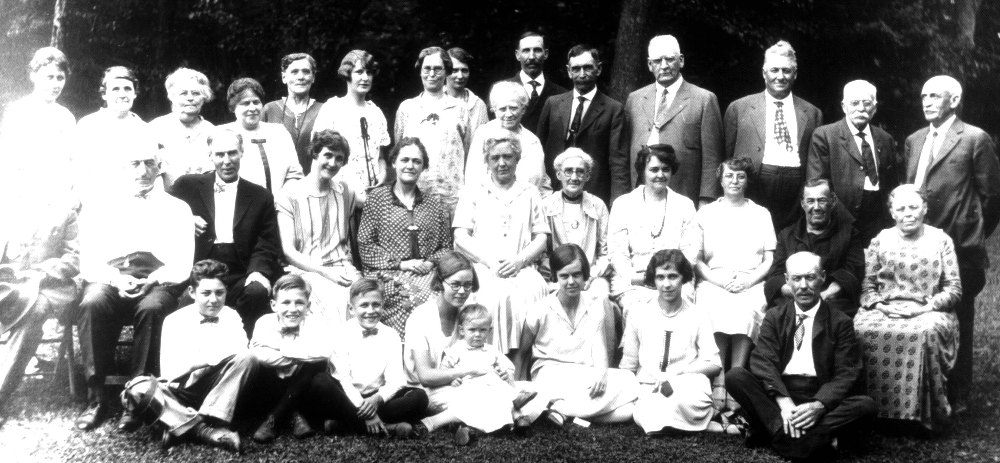

Here's a photograph of some of the descendants of Isaac and Polly nee BLACK NEFF taken at a reunion. According to Robert Reidel MIRICK, it was taken ca. 1925 at Aztalan. He indicates Dorothy Watson and Marge Ferry as identifying the participants as follows:
FRONT ROW, LEFT TO RIGHT:
Russell Taylor; Robert Breitkreutz; Roger Breitkreutz; Ruth Stetson Crump; Robert Crump (baby); Margary Stetson Mills; Vera Breitkreutz; Ed Neff of Cambridge, WI;
SECOND ROW:
Lem Black; -; W. T. Stetson; Frances Kypke; Mrs. Emil Brun of SD; Mrs. Fred C. Smith of Mpls; Mrs. L. L. Stetson; Mrs. Carrie Stetson Taylor; Mrs. Mabel Stetson Gohlke; Maggie Neff; Ella Neff;
BACK ROW:
Cora Black; Etta Stetson (Mrs. W. T.); Anna Moore; Blanche Moore; -; Wilma Black; -; Ella Braunschweig (not a relative); Mrs. Dave Moore; - ; Emil Brun; Fred C. Smith; Bruce Taylor; David Moore; Frank Neff;
Last updated on 6 Jun 1999.